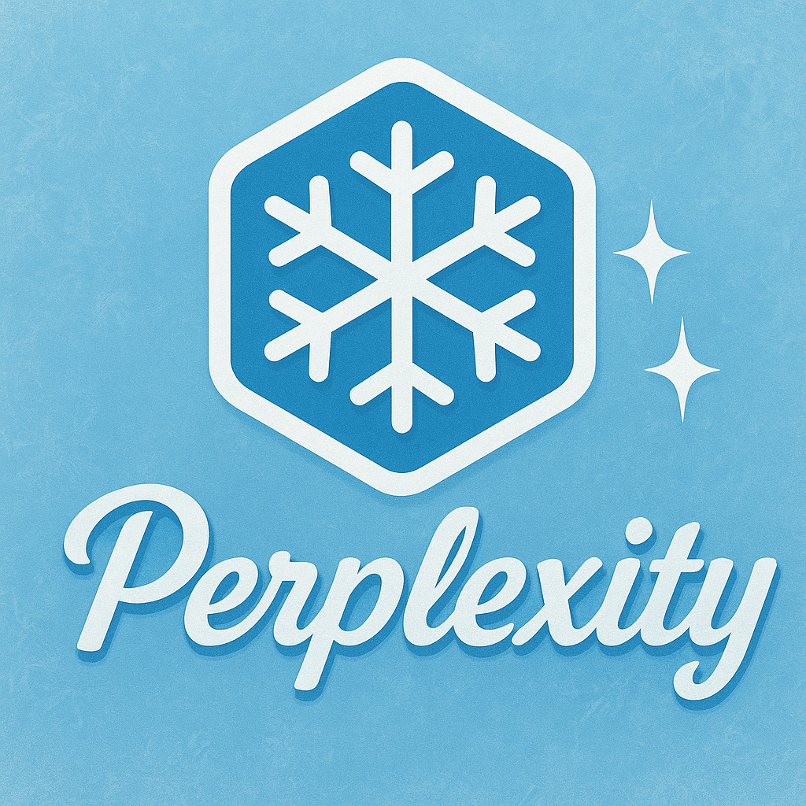

IA chatGPT
O ChatGPT é uma inteligência artificial criada pela OpenAI que responde perguntas, gera textos e auxilia em diversas tarefas. Ele utiliza processamento de linguagem natural para entender e conversar de forma semelhante a um humano. É usado para aprendizado, trabalho, criatividade e entretenimento no dia a dia.

Perplexity IA
O Perplexity é uma inteligência artificial que funciona como buscador conversacional, combinando pesquisa na web com respostas diretas. Ele fornece informações rápidas, sempre indicando as fontes consultadas. É usado para tirar dúvidas, estudar, explorar notícias e descobrir conteúdos de forma confiável.